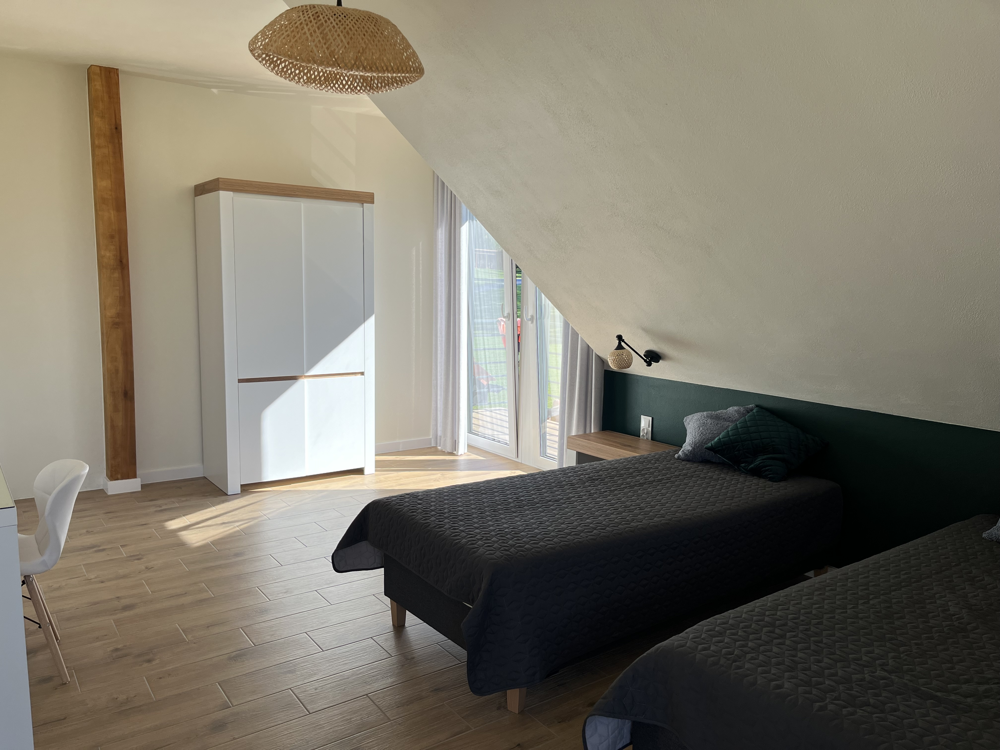
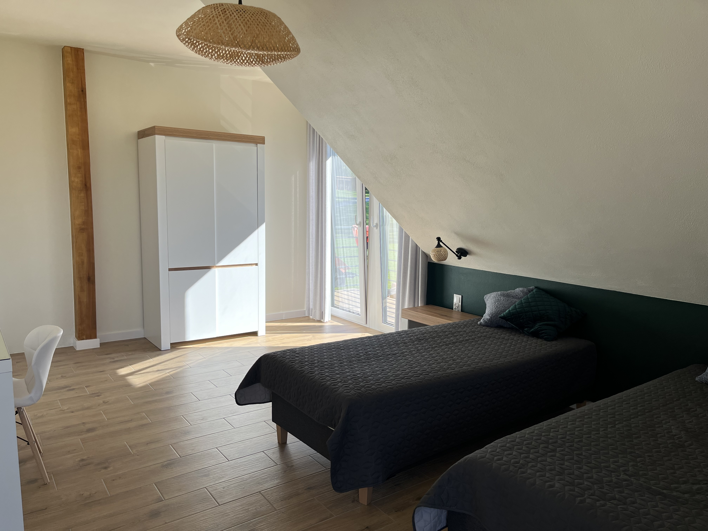
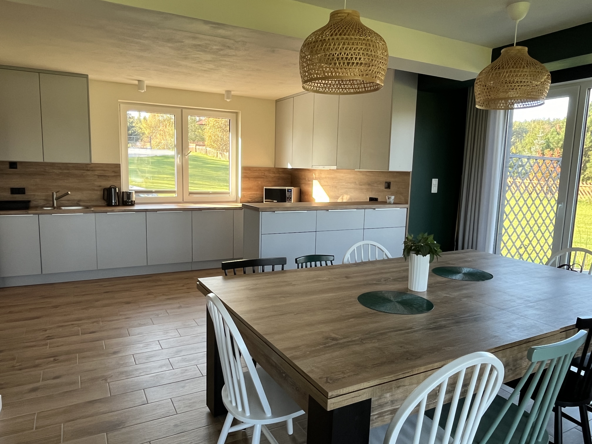
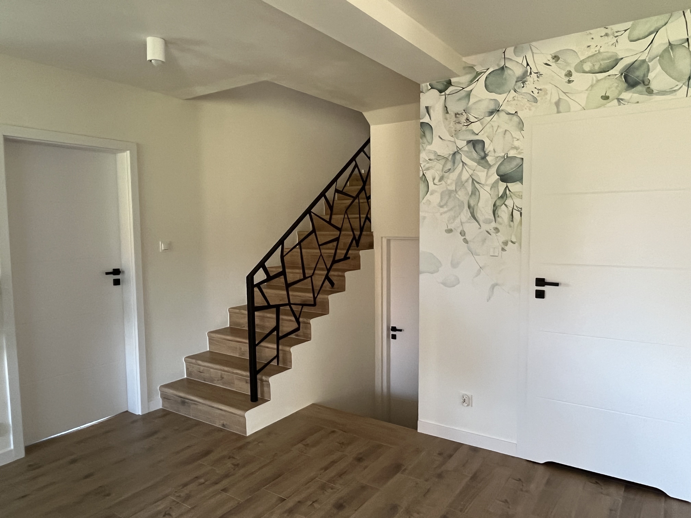
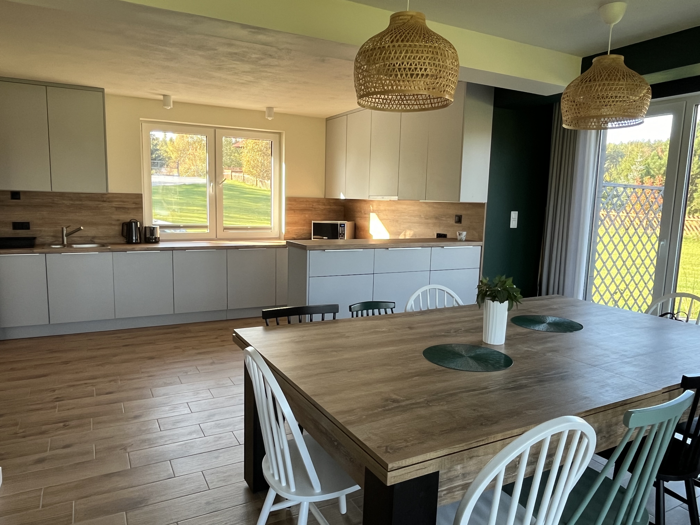
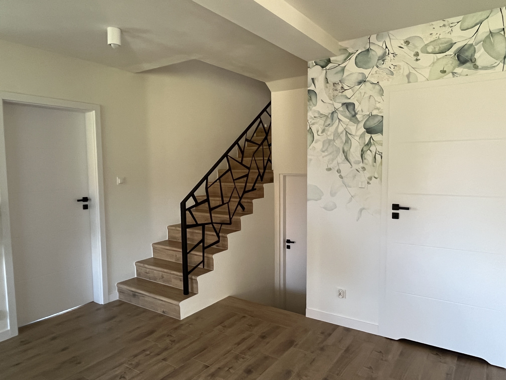

Dom Żurawia
Dom Żurawia to dom na Warmii, który komfortowo pomieści 10 osób. Dom o powierzchni 180 metrów, położony we wsi Cerkiewnik nad jeziorem Limajno z bezpośrednim dostępem do jeziora i własnym pomostem, 5 sypialni dwuosobowych, 3 łazienki, w pełni wyposażona kuchnia, salon z widokiem na jezioro i wyjściem na taras. Dom położony jest na działce o powierzchni 1,5 ha umożliwiając wiele atrakcji sportowych takich jak: piłka nożna, siatkówka, badminton, jednocześnie gwarantując prywatność.
Na zewnątrz znajduje się zadaszone miejsce na grilla z pięknym widokiem na jezioro, taras do opalania z meblami ogrodowymi oraz miejsce na ognisko.
Dom z bezpośrednim dostępem do jeziora Limajno na Warmii nazwany Domem Żurawia to spokojna przystań dla spragnionych natury i odpoczynku. Można tu rozkoszować się ciszą i spokojem otaczającej przyrody oraz cieszyć się aktywnym wypoczynkiem nad jeziorem. Własny pomost daje niepowtarzalną możliwość spędzania czasu na wodzie (do dyspozycji Gości pozostają: łódź wiosłowa, SUP, kajaki) w poczuciu intymności.
Całoroczny dom zaprasza do organizowania spotkań rodzinnych lub romantycznych wypadów na Warmię. Bliskość lasu i jeziora gwarantują wspaniałą scenerię.
Opis Domu Żurawia
Wynajmujemy cały dom (180m²) dla max. 10 osób. Dom posiada:
- 1 sypialnię dwuosobową na parterze
- 1 sypialnię dwuosobową z łazienką na półpiętrze
- 3 oddzielne sypialnie dwuosobowe na piętrze
Na parterze znajduje się kuchnia w pełni wyposażona (płyta indukcyjna, piekarnik, zmywarka, lodówka), jadalnia ze stołem bilardowym, część wypoczynkowa z kominkiem. Z salonu jest wyjście na taras, gdzie znajduje się wypoczynek oraz stół z krzesłami, zejście do altany z miejscem na ognisko oraz do jeziora.
Udogodnienia
- W pełni wyposażona kuchnia
- Taras
- WIFI
- Grill
- TV
- Klimatyzowany parter
- Altana z miejscem na ognisko
- Łódź wiosłowa
- 2 kajaki
- SUP
- Bramki i piłki nożna
- Siatka i piłka do siatkówki
- Zestaw do badmintona


 



 


